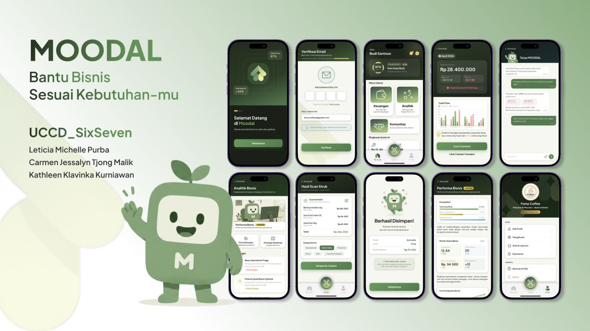

A Financial AI Copilot that helps freelancers, creative workers, and young entrepreneurs manage cash flow in a non-intimidating way.

Overview
Moodal is an AI-based financial management application that I designed with Leticia Michelle and Kathleen Klavinka, under UCCD SixSeven team, for the TechSprint Innovation Competition 2026 and Bizznovation 2026 competition. And manage to secure the top 20 out of 120 teams.
It all started with quite alarming data: a gap of about 14% between people who have access to financial products (inclusion) and those who actually understand how to use them (literacy). Freelancers and young entrepreneurs often record their finances haphazardly in Excel, or even mix personal and business money in one account. And with that in mind, we proposed Moodal as a strategic financial partner that simplifies all of that.
Problem
Independent business owners often operate without adequate records, making it difficult to access formal financing (unbankable). Meanwhile, current financial platforms are considered too rigid and complicated for the digital lifestyle of freelancers and young entrepreneurs.
Designing an informative financial dashboard without intimidating users who don't have an accounting background, while still having analytical depth equivalent to a business consultant.
Simplifying financial recording through OCR & AI chat, while elevating business professionalism standards with automated reports compliant with SAK EMKM and ready to be used for bank loan applications.
Process
Moodal was developed using an iterative and human-centered Design Thinking methodology.
We conducted research from three angles: literature study on the "Inclusion vs. Literacy Paradox", competitive positioning against BukuWarung and Buku Kas, and in-depth interviews with freelancers and young business owners to understand furthermore about their financial needs and pain points.
We mapped out two user segments through an empathy map: Mainstream (Digital Entrepreneurs & Freelancers) and Extreme (Traditional Small Businesses), that was represented by the personas of Berlamonica, a chef and culinary business founder, and Nadia Ramadhani, an online skincare shop owner.
After understanding the problem space, we used an Effort Impact Matrix to help us determine priority features. We concluded that OCR Scan, Finance, Analytics, and Ask Moodal AI were placed in the high-impact quadrant to be developed first.
We built a complete design system, starting from logo, forest green color palette, DM Serif Display & Plus Jakarta Sans typography. And then, we start designing the low-fidelity wireframes before designing high-fidelity screens for the Home, OCR Receipt Scan, Ask Moodal AI, Finance, Analytics, and Community features.
Usability testing with Berlamonica showed that the visual design was considered professional and intuitive however, there was one crucial piece of feedback: the addition of Dark Mode, because Moodal users often work in public spaces like coworking spaces, and overly bright financial figures were deemed less private. We also utilize Maze, a mock-up prototype tool, to conduct remote usability tests with other participants to understand their needs and to test if the apps manage to reduce the user cognitive load.
Solution
Here is the interactive prototype for Moodal, from the Smart Dashboard on the Home screen, OCR-based Receipt Scan, Ask Moodal AI, to the Analytics and Community features.
Reflection
Working on Moodal made me realize the importance of clear persona research when the audience spans across generations and digital literacy levels. The feedback regarding visual privacy from the testing session was also a major lesson that sometimes user needs aren't always about the new features, but also about feeling secure when using a product in public spaces.